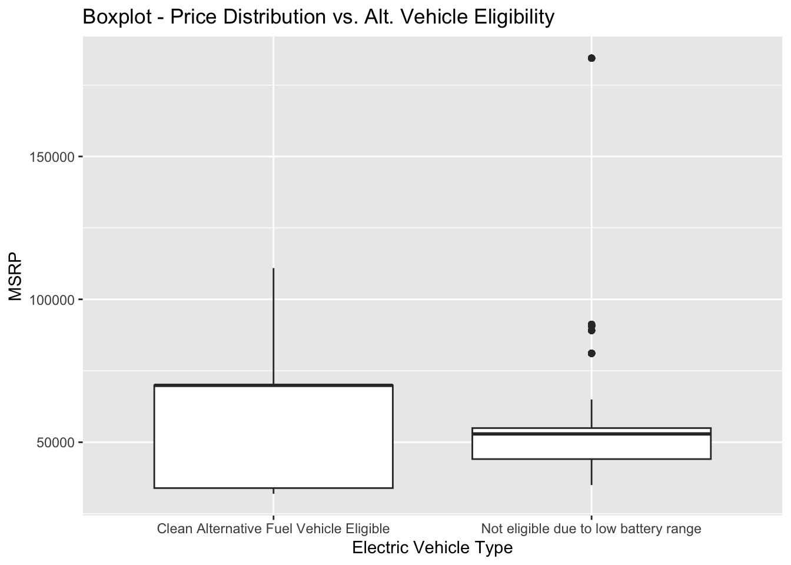
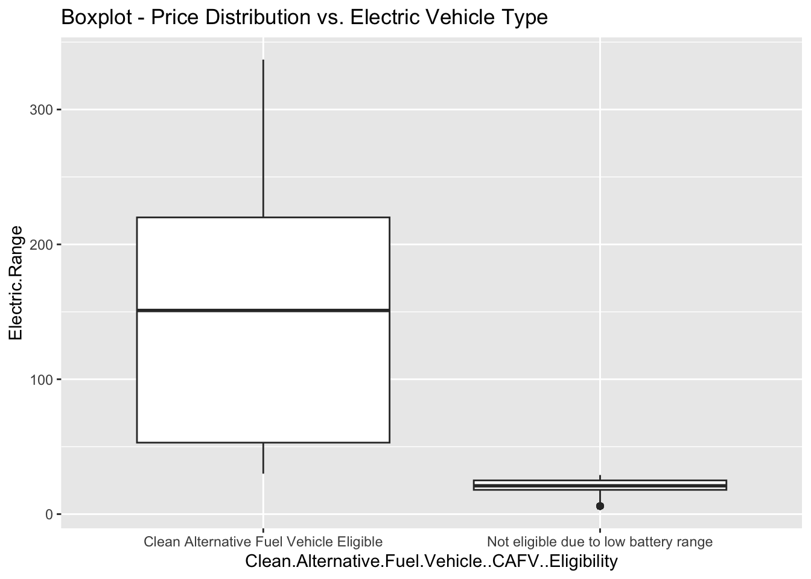
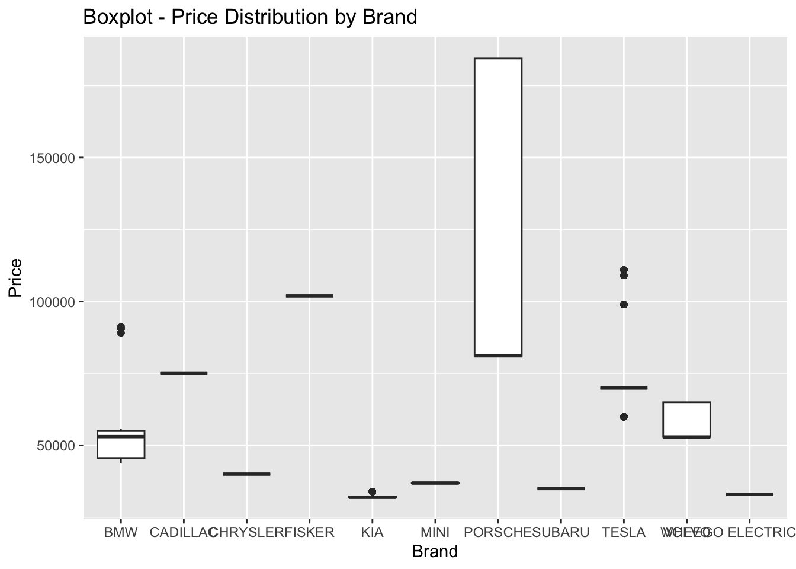
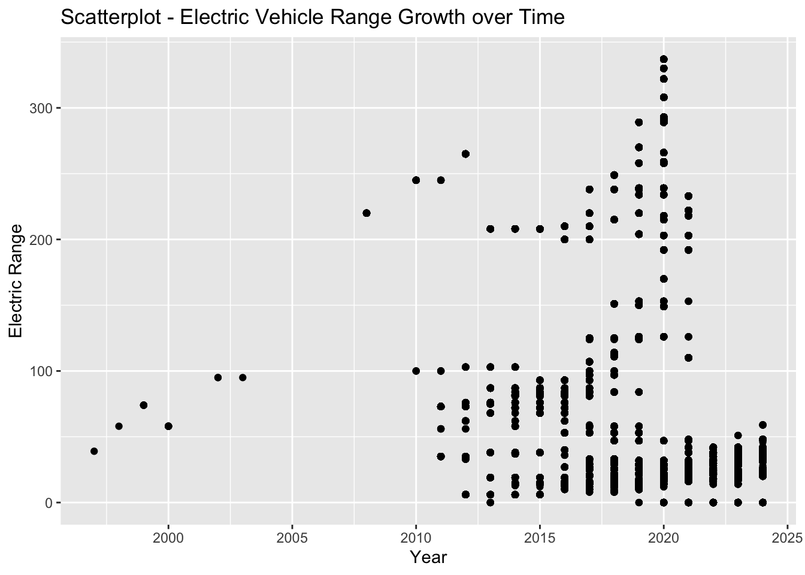

library(readxl) #for loading Excel files
library(readr)
library(dplyr) #for data processing/cleaning
library(tidyr) #for data processing/cleaning
library(skimr) #for nice visualization of data
library(here) #to set paths
library(tidyverse)
library(ggplot2)
library(tidycensus)EV Exploratory Analysis
Introduction
This document is an exploratory data analysis of electric vehicle data. The data was obtained from the IRS and contains information on electric vehicles, their owners, and the tax benefits they receive. The data was cleaned and processed in R and saved as a CSV file. This document will load the data, explore it, and fit a linear regression model to predict the number of electric vehicles in a given zip code.
# Import Data, Check Descriptive Statistics & Data Types
data_location <- here::here("data","raw-data","Electric_Vehicle_Population_Data.csv")
ev_data <- read.csv(data_location)
summary(ev_data) VIN..1.10. County City State
Length:181458 Length:181458 Length:181458 Length:181458
Class :character Class :character Class :character Class :character
Mode :character Mode :character Mode :character Mode :character
Postal.Code Model.Year Make Model
Min. : 1545 Min. :1997 Length:181458 Length:181458
1st Qu.:98052 1st Qu.:2019 Class :character Class :character
Median :98122 Median :2022 Mode :character Mode :character
Mean :98174 Mean :2021
3rd Qu.:98370 3rd Qu.:2023
Max. :99577 Max. :2024
NA's :3
Electric.Vehicle.Type Clean.Alternative.Fuel.Vehicle..CAFV..Eligibility
Length:181458 Length:181458
Class :character Class :character
Mode :character Mode :character
Electric.Range Base.MSRP Legislative.District DOL.Vehicle.ID
Min. : 0.00 Min. : 0 Min. : 1.00 Min. : 4385
1st Qu.: 0.00 1st Qu.: 0 1st Qu.:18.00 1st Qu.:183068667
Median : 0.00 Median : 0 Median :33.00 Median :228915522
Mean : 57.83 Mean : 1040 Mean :29.11 Mean :221412778
3rd Qu.: 75.00 3rd Qu.: 0 3rd Qu.:42.00 3rd Qu.:256131982
Max. :337.00 Max. :845000 Max. :49.00 Max. :479254772
NA's :398
Vehicle.Location Electric.Utility X2020.Census.Tract
Length:181458 Length:181458 Min. :1.001e+09
Class :character Class :character 1st Qu.:5.303e+10
Mode :character Mode :character Median :5.303e+10
Mean :5.298e+10
3rd Qu.:5.305e+10
Max. :5.603e+10
NA's :3 dplyr::glimpse(ev_data)Rows: 181,458
Columns: 17
$ VIN..1.10. <chr> "WAUTPBFF4H", "WAUUP…
$ County <chr> "King", "Thurston", …
$ City <chr> "Seattle", "Olympia"…
$ State <chr> "WA", "WA", "WA", "W…
$ Postal.Code <int> 98126, 98502, 98516,…
$ Model.Year <int> 2017, 2018, 2017, 20…
$ Make <chr> "AUDI", "AUDI", "TES…
$ Model <chr> "A3", "A3", "MODEL S…
$ Electric.Vehicle.Type <chr> "Plug-in Hybrid Elec…
$ Clean.Alternative.Fuel.Vehicle..CAFV..Eligibility <chr> "Not eligible due to…
$ Electric.Range <int> 16, 16, 210, 25, 308…
$ Base.MSRP <int> 0, 0, 0, 0, 0, 0, 0,…
$ Legislative.District <int> 34, 22, 22, 20, 14, …
$ DOL.Vehicle.ID <int> 235085336, 237896795…
$ Vehicle.Location <chr> "POINT (-122.374105 …
$ Electric.Utility <chr> "CITY OF SEATTLE - (…
$ X2020.Census.Tract <dbl> 53033011500, 5306701…# Checking for duplicates:
duplicates <- duplicated(ev_data) # Check for duplicates
num_duplicates <- sum(duplicates) # Count of duplicates
print(num_duplicates)[1] 0# Find total rows with MSRP prices
count_zero_msrp = length(which(ev_data$Base.MSRP == 0))
total_rows_count = nrow(ev_data)
total_price_data_points = total_rows_count - count_zero_msrp
print(paste0('Total rows: ', total_rows_count))[1] "Total rows: 181458"print(paste0('Total Missing MSRP Prices: ', count_zero_msrp))[1] "Total Missing MSRP Prices: 178146"print(paste0('Total Price Data Points: ', total_price_data_points))[1] "Total Price Data Points: 3312"# Checking for Null values:
total_na <- sum(is.na(ev_data))
print(total_na)[1] 404# Removing null values and outlier from MSRP:
ev_data_filtered <- na.omit(ev_data) # FIltered data with NA values removed
max_msrp_outlier <- ev_data_filtered %>%
group_by(Electric.Vehicle.Type) %>%
summarise(max = max(Base.MSRP))
max_msrp_outlier# A tibble: 2 × 2
Electric.Vehicle.Type max
<chr> <int>
1 Battery Electric Vehicle (BEV) 110950
2 Plug-in Hybrid Electric Vehicle (PHEV) 845000filter_msrp_outlier <- ev_data_filtered %>%
filter(Base.MSRP != 845000) %>%
filter(Base.MSRP != 0)# Create a boxplot of price distribution by electric vehicle type
p2_boxplot<-ggplot(filter_msrp_outlier, aes(x = Electric.Vehicle.Type, y = Base.MSRP)) +
geom_boxplot() +
labs(title = "Boxplot - Price Distribution vs. Electric Vehicle Type",
x = "Electric Vehicle Type",
y = "MSRP")
p2_boxplot 
# Clean data for plot
price_by_state = ev_data_filtered %>%
group_by(Clean.Alternative.Fuel.Vehicle..CAFV..Eligibility) %>%
filter(Base.MSRP != 0) %>%
filter(Base.MSRP != 845000)
# Create a boxplot for price distribution by alternative fuel eligibility
p3_boxplot<-ggplot(price_by_state, aes(x = Clean.Alternative.Fuel.Vehicle..CAFV..Eligibility, y = Base.MSRP)) +
geom_boxplot() +
labs(title = "Boxplot - Price Distribution vs. Alt. Vehicle Eligibility",
x = "Electric Vehicle Type",
y = "MSRP")
p3_boxplot 
# Clean data from plot
price_by_state = ev_data_filtered %>%
group_by(Clean.Alternative.Fuel.Vehicle..CAFV..Eligibility) %>%
filter(Electric.Range != 0)
# Create a boxplot
p4_boxplot<-ggplot(price_by_state, aes(x = Clean.Alternative.Fuel.Vehicle..CAFV..Eligibility, y = Electric.Range)) +
geom_boxplot() +
labs(title = "Boxplot - Price Distribution vs. Electric Vehicle Type")
p4_boxplot 
# Create a boxplot with the new categorical variable on the x-axis and height on the y-axis
p_boxplot<-ggplot(filter_msrp_outlier, aes(x = Make, y = Base.MSRP)) +
geom_boxplot() +
labs(title = "Boxplot - Price Distribution by Brand",
x = "Brand",
y = "Price")
p_boxplot
# Create a scatterplot with electric vehicle range growth over time
p_scatterplot<-ggplot(ev_data_filtered, aes(x = Model.Year, y = Electric.Range)) +
geom_point() +
labs(title = "Scatterplot - Electric Vehicle Range Growth over Time",
x = "Year",
y = "Electric Range")
plot(p_scatterplot)
# Save the scatterplot to a file
# ggsave("scatterplot.png", plot = p_scatterplot)